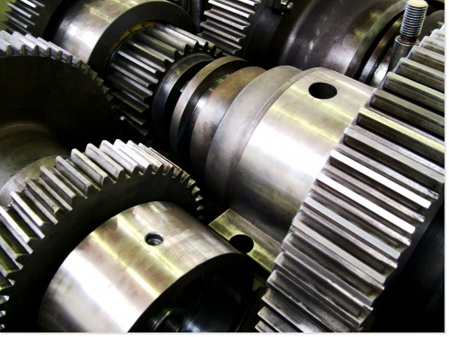
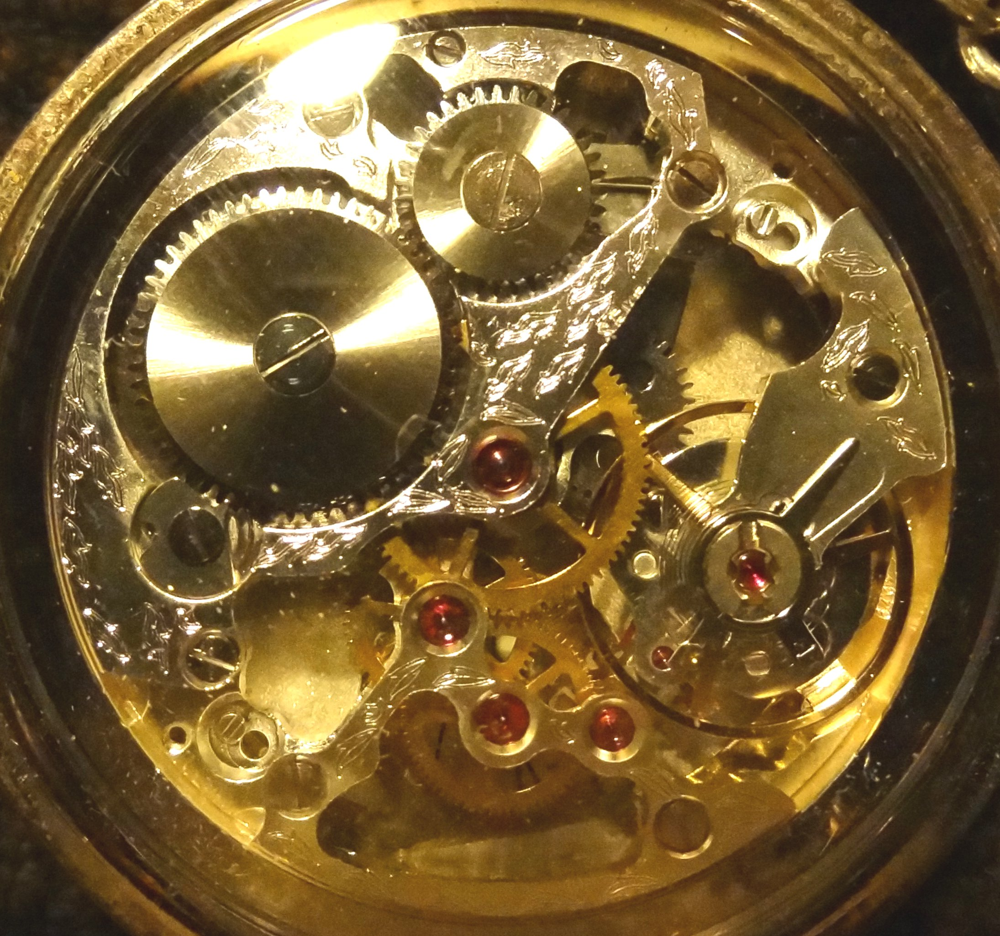
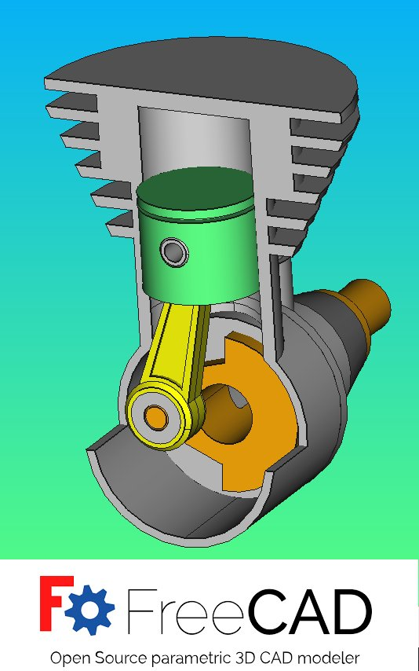
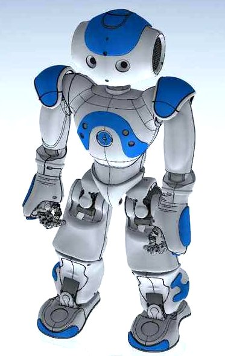
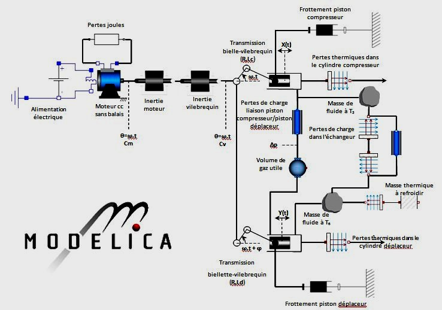
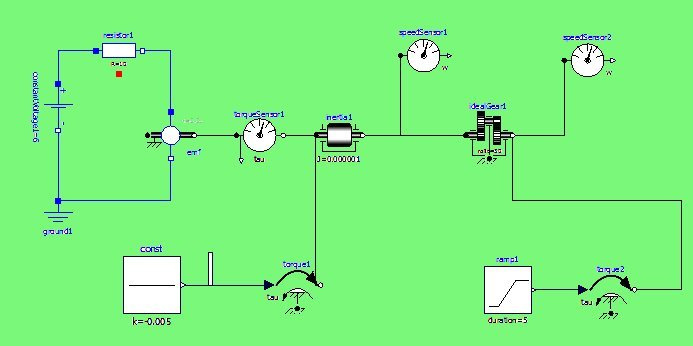

Site personnel de Serge Soursou, professeur de mécanique à l'université de Versailles Saint-Quentin-en-Yvelines

- Petit historique des sciences de l'ingénieur...
- La mécanique s'est longtemps imposée comme "LA" science des ingénieurs . Depuis le début du xxème siècle , l'électricité s'est imposée dans l'architecture des systèmes techniques. Il en est de même pour l'électronique puis l'informatique qui font de plus en plus partie de notre quotidien. Malgré cette évolution , la mécanique reste une composante essentielle des sciences de l'ingénieur ( réalisation matérielle des produits... )
- De nos jours, les systèmes entièrement mécaniques ( systèmes simples ) sont de plus plus rares ( stylo à bille, paire de ciseaux, agrafeuse de bureau....).


On appelle machine simple un dispositif mécanique élémentaire permettant de transformer une force de module et direction déterminés en une force dont le module et/ou la direction sont différents.
On distingue généralement 7 types de machines simples :
- le levier,
- la roue,
- la poulie,
- le coin ,
- le plan incliné,
- la vis ,
- l'engrenage.


Robot Nao
( Aldebaran Robotics )
Aujourd'hui la mécanique est présente dans tous les systèmes modernes ( robots, disque dur d'ordinateur, ...) et les exigeances de réalisation ( miniaturisation, performances, poids, delais de développement...) peuvent être atteintes grâce à l'utilisation d'outils de conception et de fabrication modernes ( CAO, FAO, simulation numérique, prototypage rapide...) qui font appel à des logiciels toujours plus performants ...
Les systèmes pluritechniques
Un système pluritechnique est composé d'éléments qui font appel à plusieurs technologies ( mécanique, électricité, électronique, automatique, informatique ).
Ces systèmes réalisent :
- des fonctions "type dispositif mécanique élémentaire"
- des fonctions de gestion et de transmission de l'information par l'intermédiaire de capteurs, claviers de saisie, calculateurs....
Pour aborder l'étude complète de ces systèmes , il faut donc faire appel simultanément à la mécanique, l'électricité, l'électronique, l'automatique, l'informatique...
Les modèles de simulation font appel à plusieurs domaines de la physique : mécanique, hydraulique, acoustique, électricité, magnétisme... Les applications comme Modelica ou Simulink permetttent de modéliser et de prendre en compte tous ces phénomènes afin de simuler le comportement du système

Cours d'introduction à MODELICA

Le secteur aéronautique et spatial offre une grande diversité de domaines d'intervention dans le domaine de la mécanique.L'ingénieur mécanicien conçoit des pièces et des ensembles : cellules d'avion, voilures (les ailes), tuyères (pour les réacteurs), trains d'atterrissage... Légèreté des matériaux, tenue des pièces et sécurité sont ses maîtres mots. C'est dans les bureaux d'études qu'il exerce le plus souvent ses talents.
La mécanique inervient aussi là on ne l'attend pas : par exemple dans les periphériques informatiques ( disques durs ...)

La mécanique est aussi présente dans les sciences du vivant par la biomécanique qui est l'exploration des propriétés mécaniques des organismes vivants.
Le développement du coeur artificiel en est la plus parfaite illustration puisqu'il est réalisé grâce à la collaboration d'ingénieurs d'EADS et de médecins.
Aujourd'hui, la mécanique intervient :
- dans la conversion ou la transformation d'énergie qui concerne les domaines de la production d'énergie ( modes de production et de distribution, énergies nouvelles ...) ou l'autonomie en énergie ( habitat à énergie positive, déplacements non polluants ...) qui doivent évoluer : c'est l'objet de la transition énergétique
Voir document ressources "convertir l'énergie"
- dans l'ingénierie des systèmes complexes qui sont caractérisés par la présence de plus en plus importante de capteurs ( systèmes pluritechniques , robotique ...) : c'est l'objet de la “conception et la modélisation des systèmes mécaniques “ qui concerne la modélisation des structures, la conception , l'étude de la transmission de puissance et le prototypage de systèmes complexes, intégrant divers composants (actionneurs, capteurs, éléments de machine, systèmes biomécaniques ...) et leurs systèmes de commande.
Synthèses fonction "Adapter-Transmettre l'énergie"
Systèmes de transformation de mouvement
Joints d'accouplement positifs, rigides